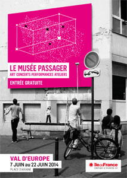
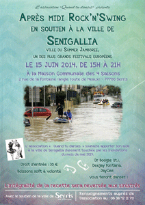
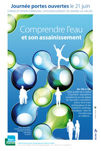

|
|
 |
| Centre Social Intercommunal |
| Du mercredi 5 février au samedi 30 août, médiathèques du Val d'Europe |
Du mercredi 5 février au samedi 30 août 2014, le réseau des médiathèques du SAN du Val d'Europe vous invite à découvrir sa nouvelle exposition sur le thème de l'eau : un parcours documentaire, multi-supports, original et ludique à travers les collections de la Médiathèque du Val d'Europe.
Une journée d'ouverture est organisée le samedi 8 février à la Médiathèque du Val d'Europe : Ateliers créatifs, spectacle, conférence… seront proposés pour l'occasion.
> + d'infos
> Site du réseau des médiathèques du Val d'Europe
|
|
 |
| Du 5 mai au 27 juin, service Accueil Famille, Hôtel de Ville |
Inscriptions annuelles aux écoles (sauf première inscription en petite section de maternelle) et aux activités périscolaires (accueils périscolaires, restauration scolaire, Temps d'Activité Périscolaire) pour l'année scolaire 2014-2015.
Le service Accueil Famille sera ouvert les samedis 7, 14 et 21 juin de 9h00 à 12h00. |
|
|
| RENC'ART DES ATELIERS |
| Vendredi 30 mai, 18h30, samedi 31 mai et dimanche 1er juin de 10h00 à 19h00, Ferme des Communes |
Peinture ....Toile é moi
Cours d'arts graphiques urbains .... Kham & Léon
Vitrail à plomb, grisaille, tifany, .... Les chênes vitrail
Marie-Laure Griffe.... Atelier modelage sculpture
...les associations culturelles de Serris s'exposent
- Vernissage : vendredi 30 mai à 18h30, avec la participation de l'Ensemble instrumental classique du Val d'Europe.
- Exposition : samedi 31 mai et dimanche 1er juin,
de 10h00 à 19h00.
Entrée libre
|
|
 |
| PORTES OUVERTES LES CHÊNES VITRAIL |
| Lundi 2 juin de 14h à 16h et mardi 3 juin de 10h à 12h, atelier rue de l'Hermière |
Portes ouvertes
Lundi 02 juin : de 14h00 à 16h30
Mardi 03 juin : de 10h00 à 12h00
L'association les Chênes Vitrail vous invite à découvrir les techniques du vitrail
Atelier : Rue de l'Hermière (à côté du Club Pré-ados) - 77700 Serris
Siège social: theodora.tempere@gmail.com / 0664548398
Présidente : movitrail@gmail.com / 0786287677 |
|
 |
| Samedi 7 juin, 10h30 - 12h30, gymnase Olympe de Gouges |
Handball Club Serris Val d'Europe
Détection - saison 2014-2015
Filles nées en 2001, 2002, 2003, 2004, 2005, 2006
> www.hbcve.fr
|
|
|
| Du 7 au 22 juin, Place d'Ariane |
Exposition d'art contemporain, performances et ateliers proposés par le Conseil régional d'Île-de-France et accueillis par le SAN et les communes du Val d'Europe.
Entrée libre.
Programme complet :
|
|
 |
|
| CONCERT DES ÉLÈVES DE MUSIQUE CLASSIQUE |
14 h 30 : concert des élèves de musique classique de l'École de Musique Serrissienne
Thème : " La Danse" (gavottes, valses, rumba...des danses anciennes aux danses d'aujourd'hui)
Entrée libre
www.ecolemusiqueserris.fr |
|
 |
| CONCERT DES ÉLÈVES DU PÔLE MUSIQUE ACTUELLE |
20 h 30 : concert des élèves du pôle musiques
actuelles de l'École de Musique Serrissienne
"Les élèves font leur concert" (cette année, ce sont les élèves qui choisissent les morceaux qu'ils veulent interpréter).
People Help the people, Summertime, Skyfall, Je veux, Happy, Stand by me, Watermelon man...
Entrée gratuite
www.ecolemusiqueserris.fr |
|
 |
| VEFC : TOURNOI DE FOOTBALL U13 |
| Lundi 9 juin, de 9h00 à 18h00, Stade de l'Hermière |
| LA NOURRITURE DANS L'ART CONTEMPORAIN |
Conférences sur l'art moderne et contemporain
Entrée libre > En savoir + |
|
|
| Vendredi 13 juin 2014, 20h00, Maison communale des 4 Saisons |
| KERMESSE JEAN DE LA FONTAINE |
| Samedi 14 juin 2014, de 13h30 à 18h30, École Jean de La Fontaine |
-
Jeux gonflables
-
buvette + délices
-
Tirage tombola à 18h00 : consoles, carte illicado, smartbox, patinette électrique...
Enveloppes toutes gagnantes
Contact : ass.lecorbeauetlerenard@orange.fr |
|
 |
| Samedi 14 juin 2014, de 10h00 à 17h00, École Jules Verne |
-
Spectacle des enfants
-
stands de jeu
-
Repas
- Tombola
Animation musicale par le groupe Arcadium
|
|
 |
| APRÈS-MIDI ROCK'N'SWING EN SOUTIEN À LA VILLE DE SENIGALLIA |
| Dimanche 15 juin, de 15h à 21h, Maison Communale des 4 Saisons |
L'association "Quand tu danses" souhaite apporter son aide à la ville de Senigallia durement touchée par les inondations du mois de mai 2014.
Dr Boogie (it.), Deejay Fontana et JayCee vous feront danser !
Droit d'entrée : 10 euros
Boisson soft à volonté
L'intégralité de la recette sera reversée aux sinistrés.
Renseignements auprès de l'association au : 06 38 42 11 70 |
|
 |
| |
 |
Les animations ouvertes sont des animations gratuites organisées par les animateurs du centre de loisirs à destination de tous les enfants de Serris, même ceux qui ne sont pas inscrits au centre de loisirs.
Jeu "Cache cache chrono"
Pour les 7-8 ans
Mercredi 18 juin, de 14h30 à 16h00, Parc des Communes
Animation gratuite.
- Annulation systématique des animations en cas de pluie
- Conditions obligatoires pour la participation aux animations : avoir le numéro de téléphone des parents.
- Nous conseillons fortement de prévoir une tenue confortable avec baskets, un sac à dos avec casquette et bouteille d'eau.
> Télécharger le programme complet des animations ouvertes |
|
 |
| Samedi 21 juin 2014, de 16h00 à 20h30, place Antoine Mauny |
Organisé par la Ville de Serris
Entrée libre.
|
|
|
| MUSÉE PASSAGER/FÊTE DE LA MUSIQUE |
| Samedi 21 juin 2014, de 18h00 à 0h30, place d'Ariane |
Place d'Ariane, de 18h00 à 0h30
Dans le cadre du Musée Passager,
Organisé par File7 et le SAN du Val d'Europe
Entrée libre.
18 h 00 : In Love With A Ghost
19 h 00 : 64 StudiOz'
20 h 15 : Team Paname
21 h 15 : A2h
22 h 15 : Victor Coup?k
23 h 15 : Ritalz
www.file7.com
www.valeurope-san.fr |
|
 |
| JOURNÉE PORTES OUVERTES SIAM |
| Samedi 21 juin 2014, de 10h à 18h |
Syndicat Intercomunal d'Assainissement de Marne la Vallée
Comprendre l'eau et son assainissement
Visite guidée de la station d'épuration, expositions, expériences sur les étapes de l'épuration, animations autour de la mare pédagogique et ses habitants, jardinage écologique, visite de l'écopâturage en calèche...
Sans réservation. Enfants accompagnés. Activités couvertes par temps de pluie.
13 avenue de la courtillière, 77400 Saint-Thibault-des-Vignes.
> www.siam77.fr |
|
 |
| Dimanche 22 juin 2014, de 14h00 à 17h00, gymnase Éric Tabarly |
Les animations ouvertes sont des animations gratuites organisées par les animateurs du centre de loisirs à destination de tous les enfants de Serris, même ceux qui ne sont pas inscrits au centre de loisirs.
Jeu "Le grand canyon"
Pour les 5-6 ans
Mercredi 25 juin de 14h30 à 16h00, Parc des Communes
Animation gratuite.
- Annulation systématique des animations en cas de pluie
- Conditions obligatoires pour la participation aux animations : avoir le numéro de téléphone des parents.
- Nous conseillons fortement de prévoir une tenue confortable avec baskets, un sac à dos avec casquette et bouteille d'eau.
> Télécharger le programme complet des animations ouvertes |
|
|
| Mercredi 25 juin, de 15h00 à 21h00, Centre Social intercommunal |
Le CSI fait son cirque
Animations pour tous
15h00-18h00 : expositions, animations, stands de jeux sur le thème du cirque
18h00-19h00 : spectacle offert par File 7, Chantons tous ensemble, démonstration de cheerleading
après 19h00 : buffet partagé avec vos spécialités à grignoter
Sur inscription : 01 78 71 40 90
www.valeurope-san.fr |
|
 |
| Vendredi 27 juin 2014, 20h00, Maison communale des 4 Saisons |
| Samedi 28 et dimanche 29 juin 2014, stade des Marmousets |
- Samedi
- moins de 18 ans féminines
- moins de 18 ans masculins
- plus de 16 ans masculins
- plus de 15 ans féminines
- Dimanche
- moins de 8 ans filles et garçons
- moins de 10 ans filles et garçons
- moins de 12 ans filles et garçons
- moins de 14 ans filles et garçons
- moins de 16 ans filles et garçons
Animations : pénalty contre Herbie, Challenges.
Restauration : buvette, barbecue, Espace Restauration.
Inscriptions et demandes d'infos : handherb@orange.fr ou hbcve@orange.fr
> www.hbcve.fr |
|
 |
|
|
|